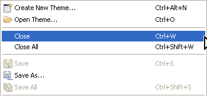
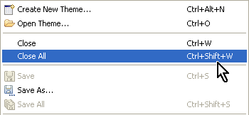

Closing a theme
Closing an individual theme
- In the Editor, select the
tab of the theme you want to close.
- In the tab, select X.
The theme is closed.
- From the menu –
from context menu in navigator

Figure:
Closing Individual Theme
Closing all themes
- From the menu- select Close
all

Figure: Closing All Themes
Note: The Navigator displays
all the themes you have in your
workspace. You can also close themes in the Navigator view.